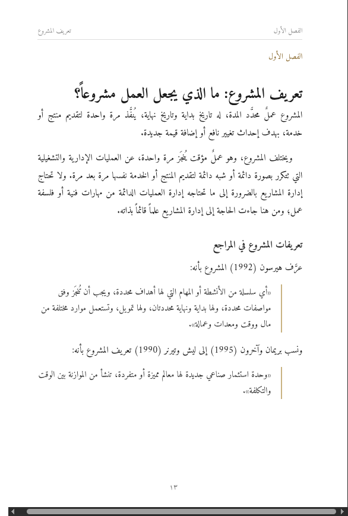

كتاب في إدارة المشاريع: صفحة محرَّرة ومنسَّقة بالكامل
لم أكتب نموذجاً من عندي. أخذت صفحة من نص عربي منشور فعلاً في إدارة المشاريع، وحرَّرتها وأخرجتها كما تُخرَّج صفحة كتاب، لتحكم على العمل لا على الوعد.
النص الأصلي من مقالة «إدارة المشاريع» في ويكيبيديا العربية، منشورة برخصة CC BY-SA 4.0، ولذلك تبقى هذه النسخة المحرَّرة تحت الرخصة نفسها. اخترتها لأنها في مجال كتابك بالضبط، ولأن عيوبها هي العيوب نفسها التي تتكرر في المخطوطات العربية. كتابك يُحرَّر على نصك أنت، فلا تنتقل إليه أي رخصة.
قبل وبعد: الفقرة التي لا يستطيع القارئ العربي فهمها
النص كما هو منشور
ووفقاً لـ [3]
المشروع هو عبارة عن وقت وتكلفة عملية مقيدة لتحقيق مجموعة من
الإنجازات المحددة تصل إلى معايير الجودة والمتطلبات.
بعد التحرير
ووفقاً لدليل الكفاءات الصادر عن الرابطة الدولية لإدارة المشاريع
IPMA/ICB (2006)، المشروع:
«عملية مقيَّدة بالوقت والتكلفة، تهدف إلى تحقيق مجموعة من
المخرجات المحددة التي تستوفي معايير الجودة والمتطلبات».
الجملة الأصلية ترجمةٌ انهار فيها ترتيب الكلمات: الصفة انفصلت عن موصوفها، فصار «وقت وتكلفة عملية مقيدة» بلا معنى يُقرأ. واسم المرجع ليس في الجملة أصلاً، بل في رقم حاشية؛ والقارئ يقرأ «ووفقاً لـ» ثم لا يجد قائلاً. بحثتُ عن المرجع فوجدته IPMA/ICB 2006، فأدخلتُ اسمه في المتن. وفي الفقرة التي قبلها كان المرجع ISO 9000:2000 وقد كُتب في المصدر بشَرطة مائلة بدل النقطتين.
قبل وبعد: فقرة الاقتباس
النص كما هو منشور
وقد عرف هيرسون (1992) المشروع بأنه " أي سلسلة من الانشطة أو المهام التي لها أهداف محدده يجب أن تنجز ضمن مواصفات محدده ولها بداية ونهاية محددتان وله تمويل ويستعمل المصادر المختلفة من اموال ووقت ومعدات وعماله.
بعد التحرير
وعرَّف هيرسون (1992) المشروع بأنه:
«أي سلسلة من الأنشطة أو المهام التي لها أهداف
محددة، ويجب أن تُنجَز وفق مواصفات محددة، ولها بداية
ونهاية محددتان، ولها تمويل، وتستعمل موارد مختلفة
من مال ووقت ومعدات وعمالة».
الاقتباس فُتح بعلامة مستقيمة " ولم يُغلق أبداً، بينما الفقرة التي تليه مباشرة تستعمل «…». وضمير «السلسلة» ينقلب في منتصف الجملة من المؤنث إلى المذكر: «لها أهداف… وله تمويل». و«المصادر» ليست ترجمة Resources، بل الموارد؛ المصادر مراجع المعلومات.
نحو ثلاثين تصحيحاً في صفحة ونصف
- قواعدإعراب «كان لدراستهم وتجاربهم أثراً واضحاً» ← أثرٌ واضحٌ؛ اسم كان مرفوع والخبر شبه جملة مقدَّم.
- قواعدإعراب «نسب بريمان واخرين» ← وآخرون؛ فاعل مرفوع، مع إثبات المدّة.
- قواعد «عملية فريدة من نوعها، التي تتكون» ← حذف «التي»؛ لا يوصف النكرة بالموصول.
- قواعد «وحدة استثمار صناعي جديدة والتي لها» ← حذف «والتي».
- قواعد «لها أهداف… وله تمويل» ← توحيد الضمير على «السلسلة».
- إملاء الانشطة ← الأنشطة · اموال ← أموال · الي ← إلى.
- إملاء محدده ← محددة (مرتان) · عماله ← عمالة · المنسقه ← المنسقة · المتخذه ← المتخذة.
- مصطلحمعجم المصادر ← الموارد · الإنجازات ← المخرجات.
- توثيق «ووفقاً لـ [2]» ← ووفقاً للمواصفة الدولية ISO 9000:2000.
- توثيق «ووفقاً لـ [3]» ← ووفقاً لدليل IPMA/ICB (2006).
- توثيقواقعة عنوان كتاب بابيج كُتب The Economy of Machinery and Manufacture’s؛ والعنوان الصحيح On the Economy of Machinery and Manufactures، ١٨٣٢.
- أسلوب «المشروع هنا هو» ← حذف «هنا»؛ صوت موسوعة لا صوت كتاب.
- أسلوب «يتم القيام به» ← «يُنفَّذ» · «تصل إلى معايير الجودة» ← «تستوفي».
- أسلوب «نفس المتطلبات التي تتطلبها» ← «ما تحتاجه»؛ تكرار اشتقاقي ثقيل.
- أسلوب «وقت وتكلفة عملية مقيدة» ← «عملية مقيَّدة بالوقت والتكلفة».
- أسلوب «الأنشطة المنسقه والتحكم بالأنشطة» ← «المنسَّقة والمتحكَّم بها».
- تنسيق خفيمقيس مسافتان غير قابلتين للكسر U+00A0 داخل الجملة؛ تبقيان في ملف Word وتُخرجان الكلمة من نتائج البحث.
- تنسيق اقتباس مفتوح بعلامة مستقيمة ولم يُغلق، وتعايش علامتين للتنصيص في فقرتين متجاورتين.
- تنسيق كسرة شاردة في «من أجلِ»؛ تشكيل متناثر بلا قاعدة.
كل بند أعلاه قابل للتحقق في النص المنشور نفسه، لا رأياً ذوقياً. وما لم أستطع إثباته لم أكتبه: اختبرتُ دعوى أن الأقواس والنقاط تنتقل إلى الجهة الخطأ عند خلط اللاتيني بالعربي، فتبيّن أن المتصفحات تعالجها صحيحة، فحذفتُ الدعوى بدل بيعها لك.
ثم الإخراج: من النص المحرَّر إلى صفحة كتاب
النص المحرَّر مصفوف هنا على مقاس ١٥٫٥ × ٢٣ سم بخط أميري، بترويسة جارية وأرقام صفحات هندية وحواشٍ في مكانها، ومعه ملحقان يسلَّمان مع أي كتاب: معجم المصطلحات المعتمد وورقة الأسلوب.

معجم المصطلحات: لماذا يسبق التحرير
أكثر ما يُفقد الكتاب العربي ثقته ليس خطأ نحوياً، بل أن يُسمّى الشيء الواحد ثلاثة أسماء في ثلاثة فصول، فيظن القارئ أنها ثلاثة مفاهيم. لذلك يُثبَّت مقابل واحد لكل مصطلح قبل البدء، ويُراجع الملف كله عليه قبل التسليم.
| المصطلح | المعتمد | بدائل مهملة، وسبب الإهمال |
|---|---|---|
| Stakeholders | أصحاب المصلحة | «الجهات المعنية» تُفهم جهاتٍ رسمية فقط |
| Resources | الموارد | «المصادر» تعني مراجع المعلومات فتلتبس |
| Deliverables | المخرجات | «الإنجازات» ما تحقق فعلاً، لا ما يجب تسليمه |
| Risk / Issue | خطر محتمل / مشكلة قائمة | الخلط بينهما أشهر خطأ في كتب إدارة المشاريع العربية |
| Baseline | خط الأساس | «المرجع المعتمد» يلتبس بمراجع الكتاب |
الجدول كاملاً (٨ مصطلحات) داخل ملف PDF، ويُبنى على مصطلحات كتابك أنت.
كيف يسير العمل
١ — قبل أي اتفاق: أرسل لي فصلاً أو ثلاث صفحات من كتابك، وأعيدها لك محرَّرة ومنسَّقة مجاناً، بقائمة تغييرات مثل القائمة أعلاه. تحكم على نصك أنت، لا على نموذج.
٢ — ورقة الأسلوب والمعجم: نتفق على قواعد التشكيل وعلامات التنصيص والأرقام والمصطلحات قبل التحرير، فلا نتجادل في المراجعة.
٣ — التحرير والتنسيق: الملف كاملاً، وتُسلَّم معه قائمة بكل تغيير جوهري حتى تراجعه وتردّ ما لا يعجبك.
٤ — التسليم: ملف Word قابل للتعديل + ملف PDF جاهز للنشر الإلكتروني، بالمعجم وورقة الأسلوب. تعديلات مجانية حتى يطابق العمل ما اتفقنا عليه.
«تم» تعني: لا خطأ إملائياً أو نحوياً، ولا مصطلح بمقابلين، ولا اقتباس بلا مرجع مسمّى في المتن، ولا مسافة خفية أو تشكيل عشوائي، وصفحات متساوية الضبط من أول الكتاب إلى آخره.
إفصاح: النصوص «قبل» مأخوذة حرفياً من مقالة ويكيبيديا العربية «إدارة المشاريع» (CC BY-SA 4.0) بتاريخ ١١ أكتوبر ٢٠٢٦، والنسخة المحرَّرة مشتقة منها وتحت الرخصة نفسها. هذه صفحة عرض أُعدّت لمشروع «تنسيق صياغة كتاب إلكتروني» على منصة بحر، وليست عملاً منفَّذاً لعميل.